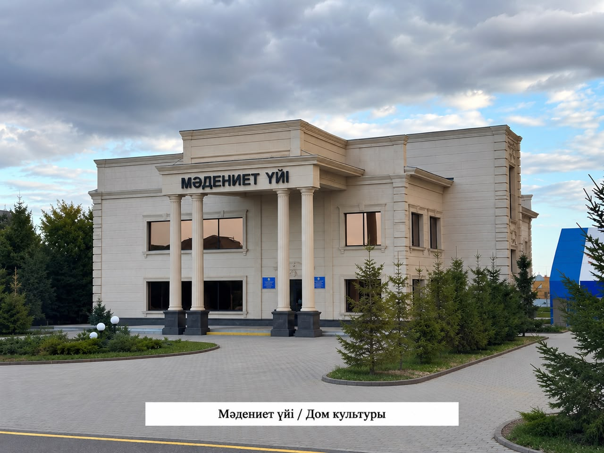

Дом культуры села Шахтерское

**Дом культуры села Шахтерское**
Карагандинская область, Нуринский район, село Шахтерское.
Дом культуры — один из важных культурных и общественных объектов села Шахтерское. Он является местом проведения праздничных мероприятий, концертов, творческих встреч и культурно-массовых событий.
Дом культуры способствует развитию творческих способностей жителей, сохранению национальных традиций и культурного наследия. Здесь создаются условия для общения, творческого самовыражения и организации досуга населения.
Дом культуры занимает особое место в общественной жизни села, объединяя жителей разных поколений и способствуя сохранению культурных ценностей родного края.